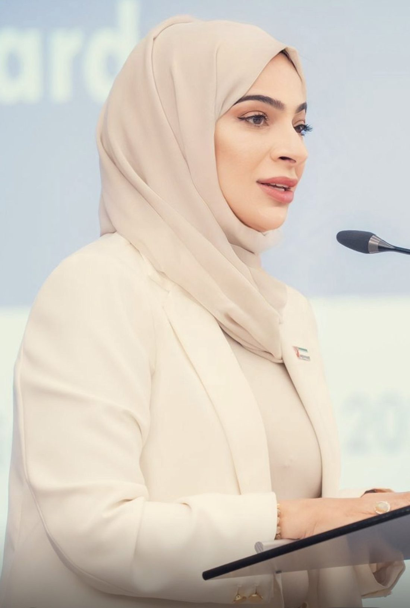

01
Geoeconomics & the New Global Order
How economics, investment, regulation, and diplomacy are reshaping international power.
Draft for review · not yet published
Skip to contentSix conversations for a changing world
Lubna has appeared on BBC and CNN and has addressed governments, global audiences, and multilateral institutions across the United Nations system, including the World Health Organization and the Human Rights Council. She has convened roundtables at the World Economic Forum and speaks on geoeconomics, global governance, leadership, and institutional change—bringing intellectual depth and practical insight to international, policy, and business audiences.

01
How economics, investment, regulation, and diplomacy are reshaping international power.
02
The Gulf’s evolving role in global economic and geopolitical affairs.
03
A personal keynote on leadership across law, government, banking, and diplomacy.
04
What business and diplomacy can learn from each other about influence, governance, and decision-making.
05
What institutions must do to create genuine pathways for women’s leadership and economic participation.
06
How legal and regulatory architecture can enable economic and institutional transformation.
Keynotes · Executive dialogues · Board retreats · Roundtables · Moderation · University lectures
A moderated conversation, board retreat, or closed-door roundtable is often the better use of my experience: an intelligent room grappling with a difficult question suits me more than a motivational speech.
Follow Lubna Qassim